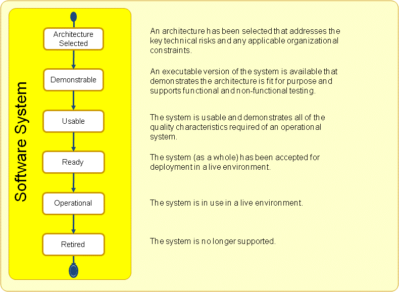

Essence Kernel
Software System: A system made up of software, hardware, and data that provides its primary value by the execution of the software.
A software system can be part of a larger software, hardware, business or social solution.
Essence uses the term software system rather than software because software engineering results in more than just a piece of software. Whilst the value may well come from the software, a working software system depends on the combination of software, hardware and data to fulfill the requirements.
The life-cycle of a software system is hard to define as there can be many releases of a software system. These releases can be worked on and used in parallel. For example one team can be working on the development of release 3, whilst another team is making small changes to release 2, and a third team is providing support for those people still using release 1. If we treat this software system as one entity what state is it in?
To keep things simple, Essence treats each major release as a separate software system; one that is built, released, updated, and eventually retired. A major release encompasses significant changes to the purpose, usage, or architecture of a software system. It can encompass many minor releases including internal releases produced for testing purposes, and external releases produced to support incremental delivery or bug fixes. In the example above the second team would be producing a series of minor releases (2.1, 2.2, 2.3, etc.) of their software system to allow the delivery of their small changes.
During its development a software system progresses through several state changes. As presented in the figure below, they are architecture selected, demonstrable, usable, ready, operational and retired. These states provide points of stability on a software system’s journey from its conception to its eventual retirement indicating (1) when the architecture is selected, (2) when a demonstrable system is produced to prove the architecture and enable testing to start, (3) when the system is extended and improved so that it becomes usable, (4) when the usable system is enhanced until it is accepted as ready for deployment, (5) when the system is made available to the stakeholders who use it and made operational, and finally, (6) when the system itself is retired and its support is withdrawn. These states can be applied to the initial release of the software system or any subsequent modification or replacement.

The first thing to do for any major software system release is to make sure that there is an appropriate architecture available; one that complies with any applicable organizational constraints and addresses the key technical risks facing the new system. Achieving this may require the creation of a brand new architecture, the modification of an existing architecture, the selection of an existing architecture, or the simple re-use of whatever is already in place. Regardless of the approach taken, the result is that the system progresses to the architecture selected state.
Once the architecture had been selected, it must be shown to be fit-for-purpose by building and testing a demonstrable version of the system. It is not sufficient to just present a set of rolling screen-shots or a stand-alone version of a multi-user system. The system needs to be truly demonstrable exercising all of the significant characteristics of the selected architecture. It must also be capable of supporting both functional and non-functional testing.
The demonstrable system is then evolved to become usable by adding more functionality, and fixing defects. Once the system has achieved the usable state, it has all the qualities desired of an operational system. If it implements a sufficient amount of the requirements, if it provides sufficient business value, and if there is an appropriate window of opportunity for its deployment, then it can be considered to be ready for operational use.
Although, a useable system has the potential to be an operational system, there are still a few essential steps to be performed before it is ready. The system has to be accepted for use by the stakeholders, and it has to be prepared for deployment in the live environment. In this state, the system is typically supplemented with installation guidance, training materials and actual training for system operation.
The system is made operational when it is installed for real use within the live environment. It is now being used to generate value and provide benefit to its stakeholders.
Even after the software system has been made operational, development work can still continue. This may be as part of the plans for the incremental delivery of the system or, as is more common, a response to defects and problems occurring during the deployment and operation of the system. Support and maintenance continue until the software system is retired and its support is withdrawn. This may be because 1) the software system has been completely replaced by a later generation, 2) the software system no longer has any users or, 3) it does not make business sense to continue to support it.
During the development of a major release many minor releases are often produced. For example, many teams using an iterative approach produce a new release during every iteration whilst they keep their software system continuously in a usable, and therefore potentially shippable, state. It is then the stakeholder representatives who decide whether it is ready to be made operational. Obviously, this approach is not always possible, particularly if major architectural changes are required as these often render the system unusable for a significant period of time.
Understanding the current and desired states of a software system helps everyone understand when a system is ready, what kinds of changes can be realistically made to the system, and what kinds of work should be left to a later generation of the software system.
An architecture has been selected that addresses the key technical risks and any applicable organizational constraints.
The alpha is in this state when:
An executable version of the system is available that demonstrates the architecture is fit for purpose and supports functional and non-functional testing.
The alpha is in this state when:
The system is usable and demonstrates all of the quality characteristics of an operational system.
The alpha is in this state when:
The system (as a whole) has been accepted for deployment in a live environment.
The alpha is in this state when:
The system is in use in a live environment.
The alpha is in this state when:
The system is no longer supported.
The alpha is in this state when:
N/A
N/A
Copyright © 2012 Ivar Jacobson International AB, Florida Atlantic University, Fujitsu, Impetus, International Business Machines Corporation, KTH Royal Institute of Technology, Metamaxim Ltd., PEM Systems, Stiftelsen SINTEF, University of Duisburg-Essen. , ver. 1.0.3